Britain's £2 billion economics consultancy trade, reconstructed from 8,110 filings at Companies House in Cardiff.
Walk past 199 Bishopsgate on a weekday morning and you pass a glass tower whose tenants happen to run one of the highest-profit-per-partner professional services firms in Britain — at least among the ones that file accounts detailed enough to prove it. No sign on the door says so. There are eighteen partners inside. Each of them takes home more than three million pounds a year, and the top earner pockets £5.77m.
You have almost certainly never heard of them.
RBB Economics is the loudest example of a trade that most people cannot name three firms from. Ninety of these outfits are registered in the United Kingdom; together they collect more than £2 billion in annual fees — a figure broadly consistent with Cebr's March 2018 estimate of £1.53 billion for 2016/17 growing at 11.3% a year, extrapolated forward. They advise competition authorities, they advise law firms, they advise regulators and they advise governments, and most of their work happens behind the closed doors of merger reviews, regulatory proceedings and litigation. You do not see it. You see only the tower.
The paper trail, however, is another matter. Every firm files its accounts at Companies House in Cardiff, where they become public, indexed and free. The last twenty-five years of those filings run to 8,110 documents; the audited numbers inside 1,100 of the PDFs are what this essay draws on. Eight charts carry the story.
Ninety firms, grouped by what they do, sized by revenue.
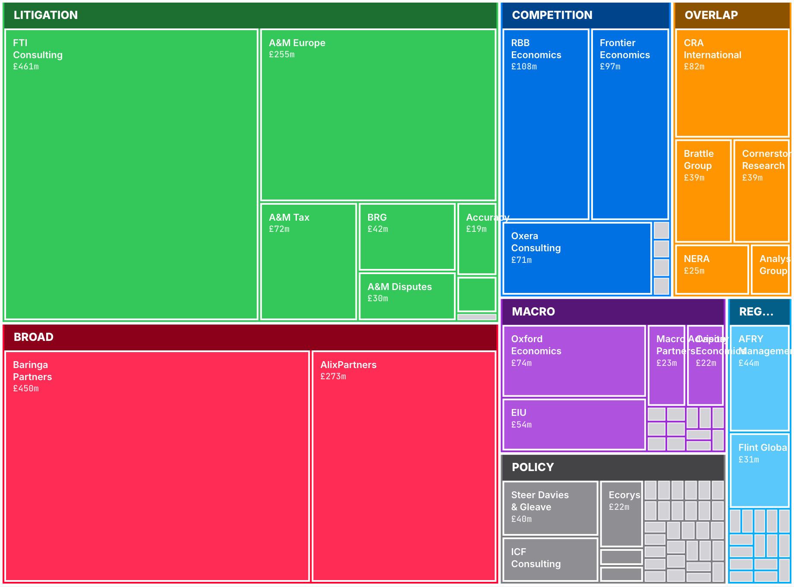
Twenty-three firms with disclosed revenue. Ranked.
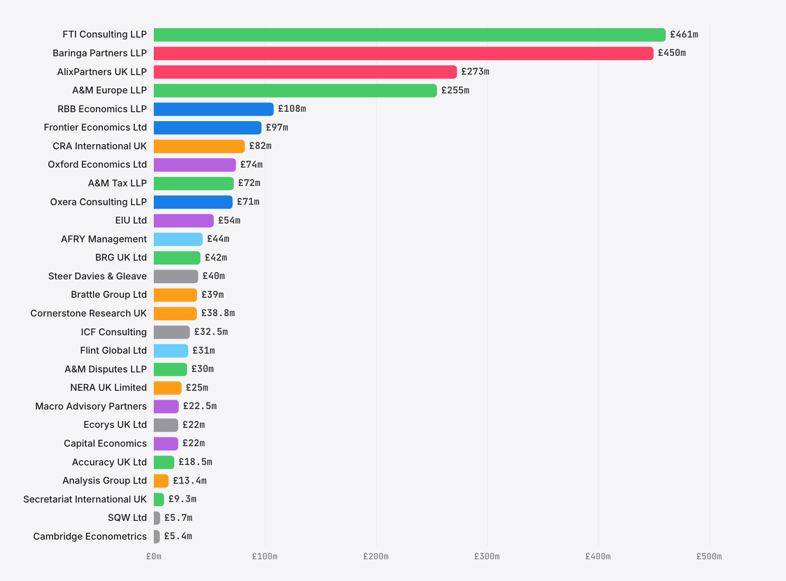
Above £250m sit four giants. FTI Consulting LLP is the largest at £461m (Companies House OC372614, for the 12 months to March 2025; the prior-year comparative of £550m covers a 15-month transition period from 1 January 2023 to 31 March 2024 and is not directly comparable on a YoY basis); Baringa Partners is second at £450m; A&M Europe follows at £301m; AlixPartners UK rounds the quartet at £273m. None of them is a pure economics firm. Each runs economics beside restructuring, forensic accounting or management consulting, and it is the bundle that generates the scale.
The pure-play tier begins with RBB Economics at £108m, followed by Frontier at £97m, CRA at £82m, Oxford Economics at £74m and Oxera at £71m.
Between £24m and £45m there runs a middle tier of American parents and European subsidiaries — NERA UK, Cornerstone, BRG, Brattle, Accuracy, AFRY, Flint Global — each reporting upward through a foreign head office. Below £20m the visible list thins to Analysis Group and Cambridge Econometrics, and then disappears entirely. Everyone else vanishes into a long tail that public filings cannot reach.
From -2% to 56%. The same industry contains both extremes.
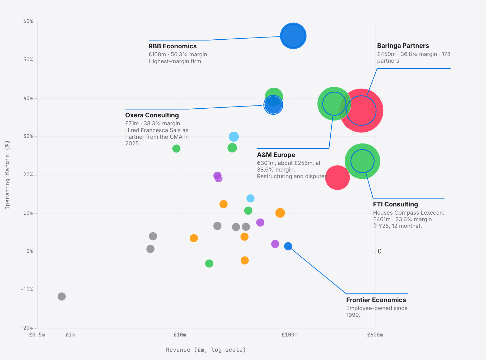
RBB sits by itself in the top right corner. A 56 per cent operating margin on £108m of turnover is a combination nobody else in the dataset gets near. The firms that match RBB on margin are a fraction of its size; the firms that match it on revenue carry margins that are half as wide.
A cluster of mid-sized names — Oxera, Baringa, A&M Europe, A&M Tax, Flint Global — runs along the 30 to 40 per cent band. These are the places where partner economics actually work: enough revenue to matter, enough margin to reward.
Frontier Economics and Oxford Economics anchor the bottom. Frontier at £97m, 1.4 per cent margin. Oxford Economics at £74m, 2 per cent margin. The numbers look alarming until you read the ownership footnote.
Frontier is not under-earning. It is employee-owned, and it distributes its operating surplus through salaries rather than profit; the margin line is a residual by design. Brattle UK, alone among the twenty-three, actually lost money — £0.9m on £39m of revenue. Every other firm in the set finished the year in the black.
A caveat on comparability. The margins plotted here are as reported in each firm’s filed accounts. For the LLPs in the set (RBB, Oxera, Baringa, FTI, A&M, AlixPartners UK) operating profit is struck before any members’ remuneration charge, so the LLP-to-LLP comparison is like-for-like; the RBB 56.3% versus Oxera 38.3% spread is genuinely eighteen points on that basis. What differs is how each firm classifies what flows below operating profit: RBB £0, Baringa £0, Oxera £8.3m as members’ remuneration. On a distributable-profit-over-turnover basis the comparison bifurcates: RBB 55.6%, Baringa 36.0% (each essentially equal to its operating margin because neither charges below-line rem), Oxera 26.5%. The RBB–Oxera gap widens on that basis from eighteen to roughly twenty-nine points. The Ltd companies (Frontier, Oxford Economics, Capital Economics, Brattle UK) report post-owner-remuneration margins, which is a different basis. Read the chart for where each firm routes value.
Revenue since each firm was born. Frontier 1999. Baringa 2000. RBB 2002.
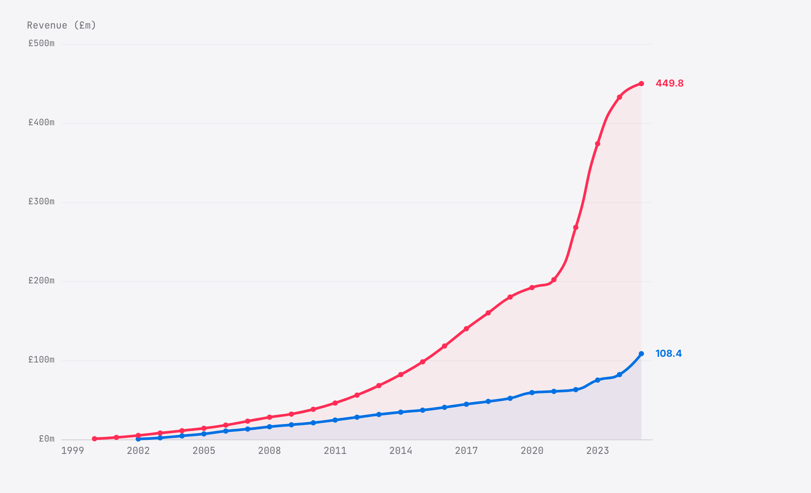
RBB's first year was £2m, in 2003. The three founders walked out of NERA with a client list in their pockets, set up shop, and began booking work almost immediately. By 2010 the firm stood at around £21m on the approximation curve; the FY20 filed accounts show £59m; and then the line bends sharply upward, to £108m by FY25.
Baringa started smaller and scaled faster. A management-consulting generalist from day one, it crossed £100m in the mid-2010s, £200m in 2021, and approaches £500m today with 178 partners signed onto the LLP register. The two firms chose opposite models and both models worked.
Frontier is the oldest of the three and the quietest. It was founded in June 1999 by Simon Gaysford, Philip Burns, Dan Elliott, Zoltan Biro and Michael Webb — a founding board drawn from London Economics Ltd and the Bank of England, with Sarah Hogg as chair; it has grown steadily to £97m over twenty-six years; and it has remained employee-owned throughout. Partners and staff share equity, profit is a residual after salaries, and if you toggle Frontier on you see the straightest line in the industry.
The early-year figures here are approximations reconciled against each firm's own published histories. Every data point from FY21 onwards is read directly from Companies House.
RBB and Baringa, side by side, 2021 to 2025. And then the arithmetic underneath.
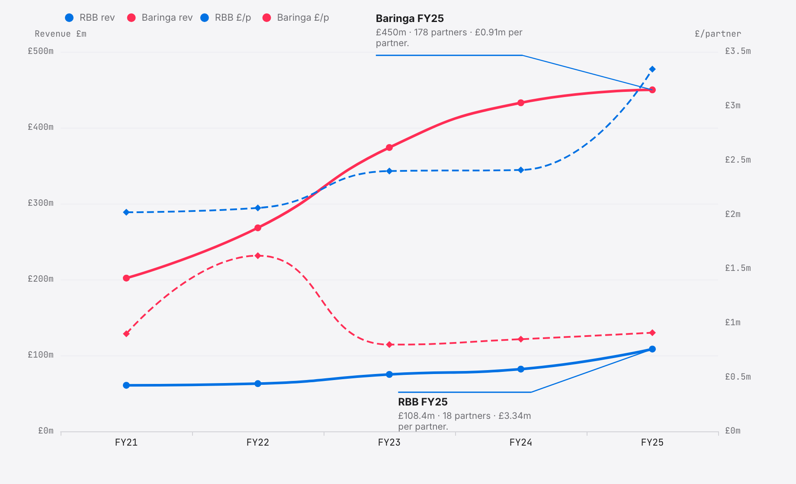
Both firms advise competition authorities, regulators and governments; both are partner-owned London LLPs; both grew fast between 2021 and 2025. That is where the similarity ends.
RBB Economics runs a concentrated partnership. The membership actually contracted, from 20 in FY2021 to 18 in FY2025, while revenue climbed from £61m to £108m. Profit per member rose from £2.02m to £3.34m — a 65 per cent increase spread across fewer people. Fewer owners, more each.
Baringa Partners runs the mirror image. Its partnership expanded from 98 members to 178 as revenue rose from £202m to £450m, and the firm also distributes roughly £170m in salaries to its 1,800 non-partner staff. More owners, bigger pool, distributed wider.
Frontier Economics takes the Baringa logic further still. It is employee-owned; the founders gave away their equity on day one in 1999; profit, again, is a residual after everyone is paid.
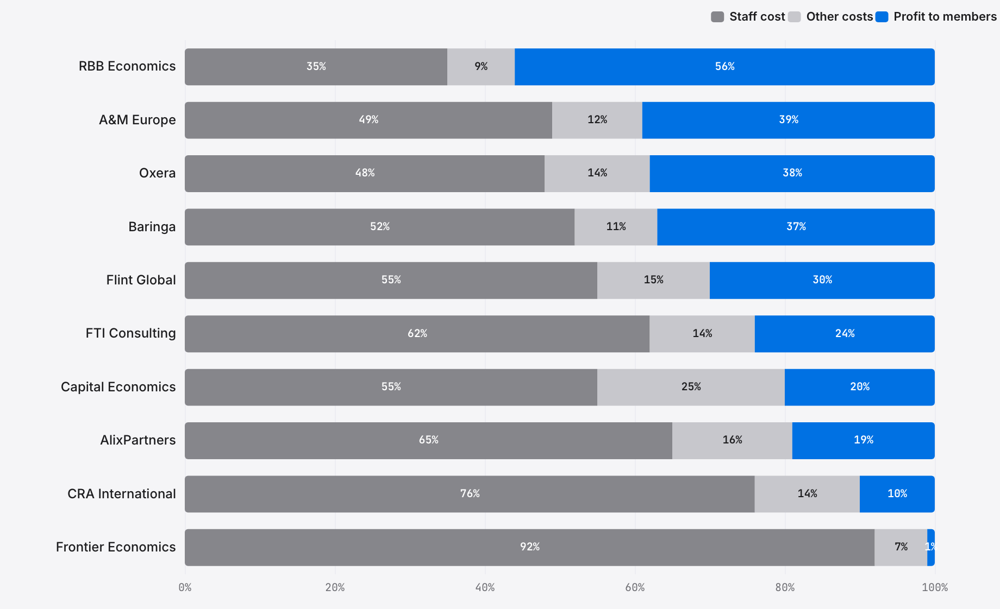
The two growth stories above are one layer of the thing. This chart is the arithmetic that sits underneath them — the question of where every pound of revenue ends up once the firm has paid its bills.
RBB is the extreme. Fifty-six pence of every pound becomes profit to its eighteen LLP members; thirty-five pence pays staff; nine pence covers everything else, meaning rent, software, travel and professional indemnity. That is how a single partner ends up with £3.34m a year. A small, closed partnership taking a very large share of a medium-sized revenue base is the whole trick.
Frontier is the mirror image. Ninety-two per cent of revenue is staff cost; one per cent shows up as profit to members, because every economist at Frontier is also an owner and the partners get paid through salaries, not distributions. The profit line, once again, is a residual by design.
FTI Consulting, AlixPartners and A&M Europe all land between 49 and 65 per cent staff cost and 19 to 39 per cent profit-to-members. They are large partnerships with deep pyramids under each partner, profitable by any normal standard but nowhere near the RBB extreme.
CRA International sits at the bottom of the table on ten per cent profit-to-members. That is not inefficiency. CRA is a US subsidiary, and it remits most of its UK revenue upward to a Boston parent. A purely domestic LLP like RBB does not pay that cost.
Private equity discovered economics consulting in 2014. It has been buying ever since.
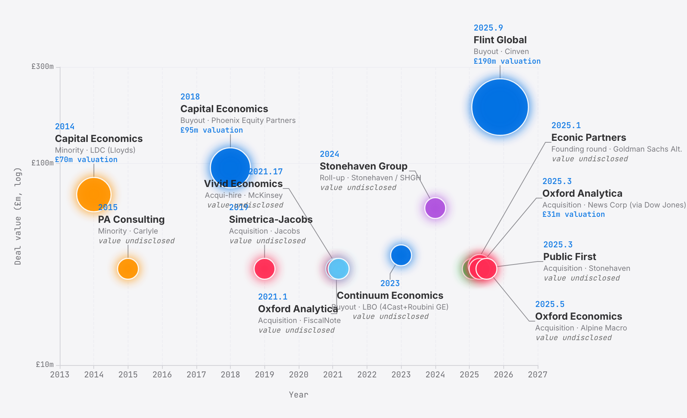
Before 2014 not a single UK economics consultancy had taken private equity money. Then LDC, the Lloyds-owned mid-market fund, bought a minority stake in Capital Economics at a £70m valuation; four years later Phoenix Equity Partners ran a full buyout at a £95m valuation; and LDC walked away having multiplied its money 2.5 times, a 43 per cent internal rate of return. The first cheque had worked.
In December 2025 Cinven bought control of Flint Global at roughly £190m, a reported 16 times EV/EBITDA. Ed Richards, the former Ofcom chief, and Sir Simon Fraser, the former permanent secretary at the Foreign Office, both remain on the cap table as shareholders. Stonehaven had already begun rolling up political-economic firms in 2024 and picked up Public First in March 2025. The cheques keep coming.
Fifty outstanding charges across the industry. Here is who banks whom.
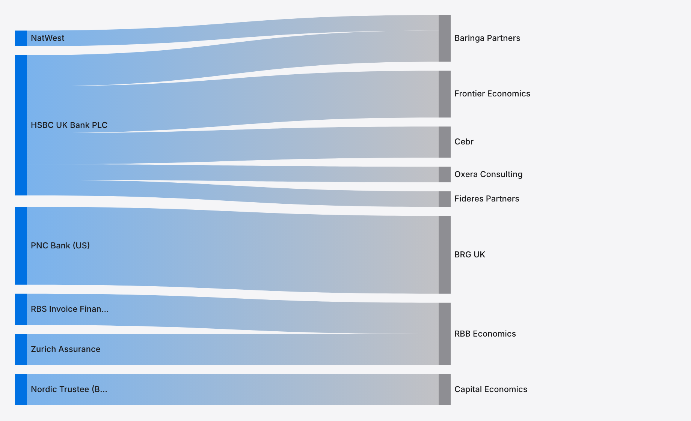
HSBC UK Bank PLC banks the UK economics industry. It holds charges against Baringa Partners, Frontier Economics, Oxera Consulting, Cebr and Fideres Partners — five of the most visible names in the trade, all working off the same relationship manager somewhere in Canary Wharf.
BRG UK uses PNC Bank, which is American. Its US parent arranged the UK facility through its US banking relationships, and the London subsidiary took what it was given.
RBB Economics splits its charges between RBS Invoice Finance and Zurich Assurance. The Zurich charge is pension-linked.
Capital Economics is the oddity. It is the only firm in the dataset whose charges point to Nordic Trustee, which represents bondholders rather than banks. The original Phoenix Equity Partners debt structure — charges in favour of Glas Trust Corporation Limited, registered between April and June 2018 — was satisfied in March 2026 and replaced by new charges in favour of Ocorian Trustee (UK) Limited, trading as Nordic Trustee, registered in November 2024 and January 2025. Refinancing, secondary sale, or some combination of the two — the PE ownership structure is evidently evolving.
New director and LLP-member appointments per year across the seven largest firms.
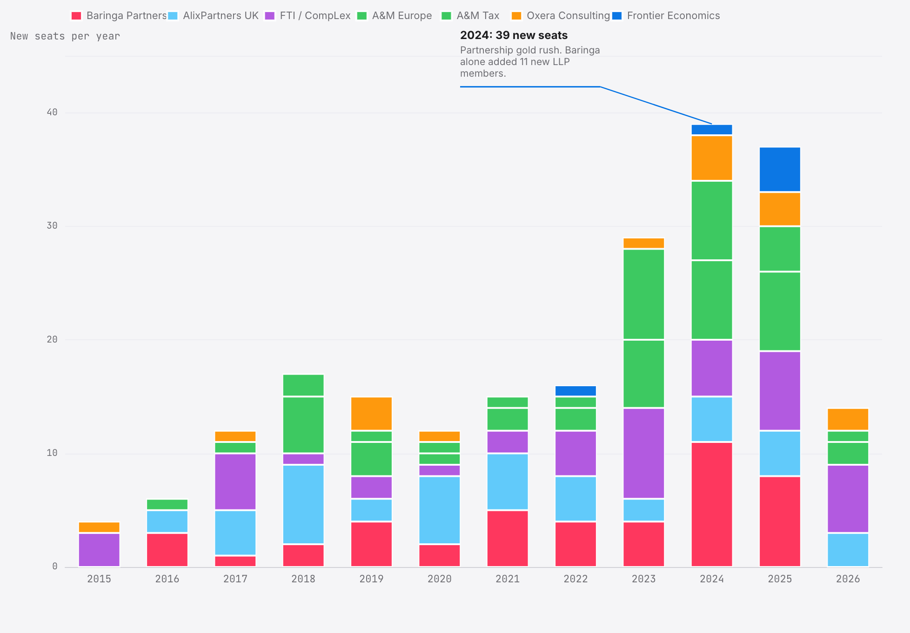
Between 2022 and 2024, something broke loose. From 2015 through to 2022, the seven largest UK economics and disputes firms between them filed roughly fifteen new director or LLP-member appointments a year. In 2024 that number jumped to thirty-nine; in 2025 it came in at thirty-seven. The rate had more than doubled in thirty months, and it has not come back down.
Baringa led the charge, and A&M ran second. Baringa alone added eleven new LLP members in 2024 and another eight in 2025 — the fastest partner-class expansion of any UK consultancy, full stop.
The partnership is not merely growing — it is churning. Departures climbed in step with hires from 2022 onwards: internal promotions, retirements, moves to rivals, moves into new firms altogether. The net chart draws the difference. In most years the seven firms gained somewhere between five and fifteen partners on balance; in 2024, for the first time, the net number crossed twenty.
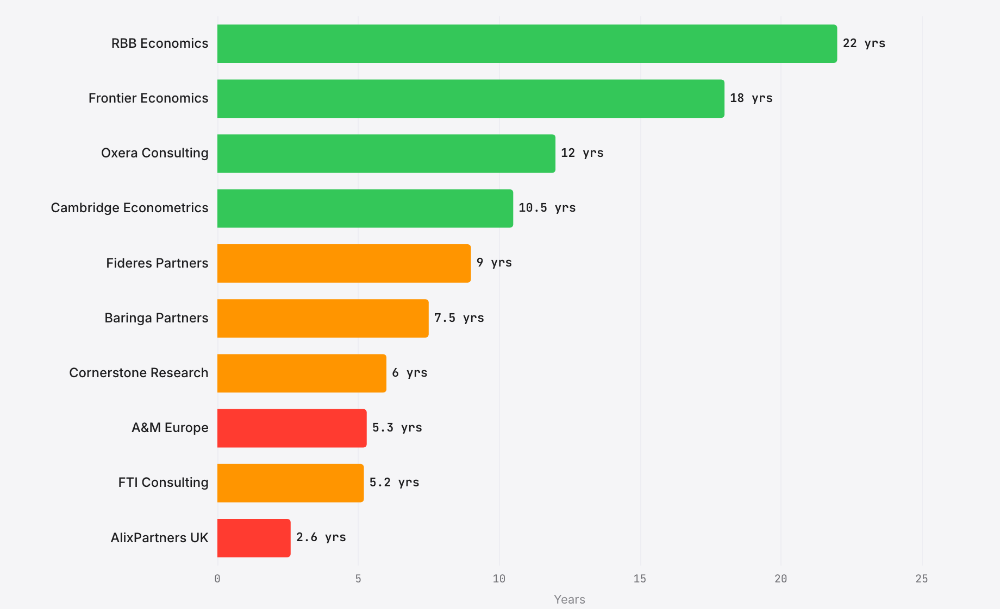
Hiring is only half the story. The other half is retention — and if you measure the average tenure of LLP members still active at each firm today, the gap between top and bottom is startling.
RBB and Frontier are the extremes. The long-tenured core at each firm has averaged 22 years on the partnership or directors' register at RBB and 18 at Frontier, as long as the firms themselves have existed. Both are closed shops where the founding cohort has stayed put and the partnership expands by slow promotion rather than lateral hire; Simon Bishop retired from RBB in April 2023 after twenty-one years, the exception that demonstrates how rare partner-level departures have been at either firm.
Oxera, Cambridge Econometrics and Fideres sit in the middle tier at 9 to 12 years — still a long run by any industry standard, and all three are competition or niche-policy boutiques with tight partner classes.
AlixPartners UK averages 2.6 years. A&M Europe is 5.3. FTI, taking in its Compass Lexecon subsidiary, is 5.2. These are firms with large partner classes where the profit-per-partner arithmetic depends on constant churn: promote quickly, distribute quickly, let the next cohort through.
The gold-rush chart above tells you who is hiring. This one tells you who they are replacing.
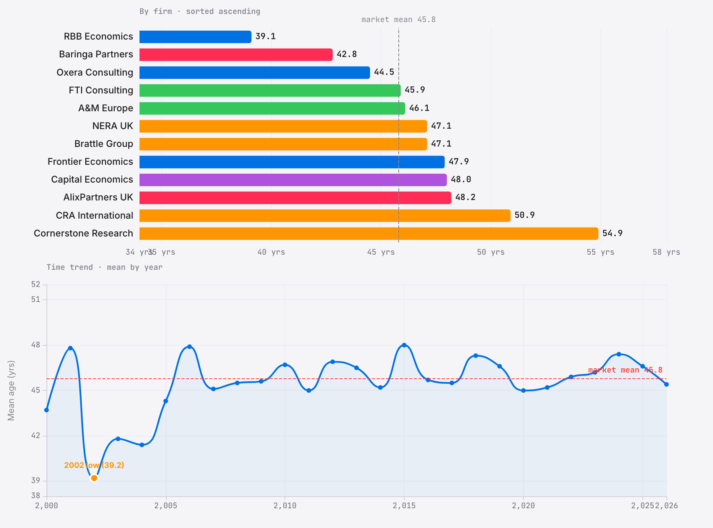
Chapter 07 has asked who was hired and how long they stay. The last piece is how old they were on the day they walked through the door.
The time trend is almost perfectly flat. Between 2000 and 2026 the mean age of a new director or LLP member in the UK economics consultancy market has hovered at forty-five to forty-seven years. The number barely stirs at the 2014 arrival of private equity or the 2024 gold rush. Partner-making has its own metabolism, and the metabolism is not responsive to either money or growth.
But firm-level variation is enormous. RBB Economics promotes people at an average age of thirty-nine. Cornerstone Research does not hire anyone under forty-six. That is a sixteen-year spread across firms that sell into the same regulatory proceedings.
RBB is the youngest big firm and the longest-tenured. The reason is 2002. When Ridyard, Bishop and Baker walked out of NERA with thirteen colleagues — a sixteen-economist founding cohort in all — they made themselves LLP members in their mid-thirties and have kept the partnership closed ever since. Young promotion plus long tenure is only possible when almost nobody leaves.
AlixPartners is the oldest and the shortest-tenured. Opposite mechanism entirely: the firm does not promote from within but imports senior lateral hires in their late forties who stay two or three years before the next move. Cornerstone Research takes it further. Its minimum age at appointment in the whole dataset is 46, because it hires only senior testifying experts.
How the market was built, 2000 to 2025. Every founding event on one timeline.
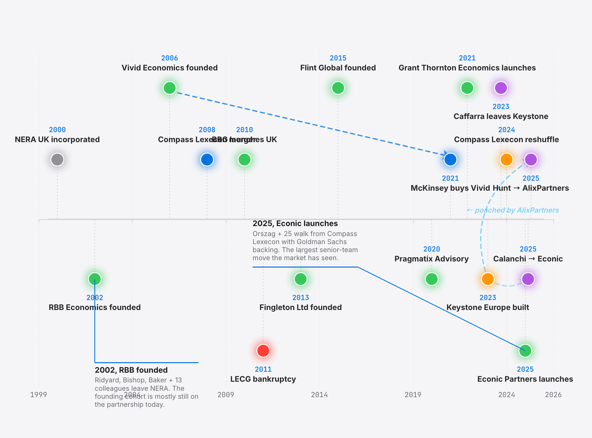
The 2011 cluster is not one story but two. LECG was a US firm that collapsed into bankruptcy in 2011; its London economists scattered to BRG and Compass Lexecon. Two years later, and entirely separately, John Fingleton — the former chief executive of the OFT — set up a boutique competition-policy advisory under his own name.
Keystone built a European office, and then watched three of its four senior hires walk out. By the end of 2025, Caffarra had decamped to UCL and CEPR, Calanchi had joined Econic Partners, and Stefan Hunt had signed on at AlixPartners (2 December 2025). Only Coscelli stayed.
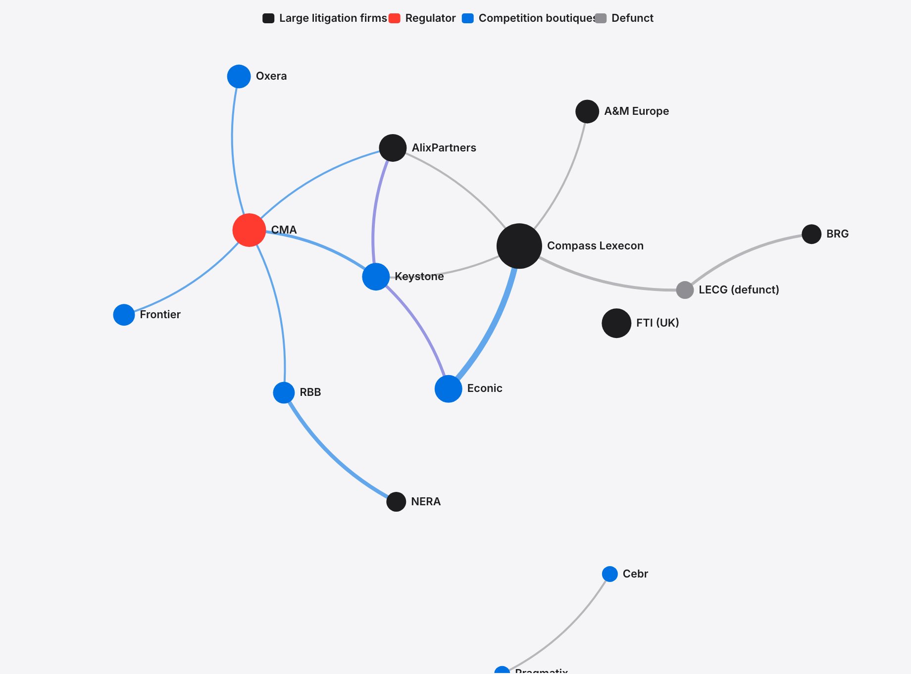
The timeline above shows events. This chart shows the structure those events left behind. Draw an edge between any two firms that have shared a director or LLP member at any point since 2000, and one node pulls everything else toward the centre of the graph.
Compass Lexecon is the hub of the UK economics consultancy market, full stop. Every other firm is within one or two edges of it. The ribbon connecting Compass Lexecon to Econic Partners — the twenty-five economists who walked out together in February 2025 — is the single thickest edge in the entire dataset.
The CMA sits in its own satellite orbit. It has exit edges running everywhere — to Keystone, Oxera, Frontier, AlixPartners — and almost no return edges. The regulator is a net exporter of talent. It is not a marketplace.
Frontier and RBB are almost disconnected from the rest of the graph. Frontier has exactly one edge — Mike Walker joining as senior advisor from the CMA in January 2025. RBB has one — Benoît Durand joining from the Competition Commission in 2008. They are the only two firms in the dataset with fewer than two overlap edges, and both are partnerships that deliberately hold onto their people. The tenure chart in chapter 07 is the other way of looking at the same picture.
The entire UK economics consultancy market fits inside a single SQLite database that runs on a laptop. The laptop costs less than what an RBB partner earns in a morning.
Every number in this story came from Companies House. No firm was contacted; no interview was conducted; no informant was cultivated. The data was already filed, already indexed, and already public in the registry at Cardiff. The financial picture of a £2 billion industry turns out to be entirely reconstructable from statutory documents alone.
The ninety firms break into seven segments. Policy is the largest cohort, with 35 firms; regulation runs second at 17; and macro forecasting comes third at 16. Litigation and competition together account for a modest 15 firms. Those 15 collect most of the money.
Block size is turnover, and the largest rectangles belong to the multi-practice advisory houses — FTI Consulting, Baringa, A&M. The pure-play economics shops, the boutiques that trade only on their formulas and their expert witnesses, sit as medium blocks inside their own colour band.
Sixty-six of the ninety firms file small-company accounts with no turnover disclosed at all. They appear in the treemap as identical uniform tiles, ranked by nothing in particular.
The visible market is the tip. The base of the pyramid is wider than the top by a long way.